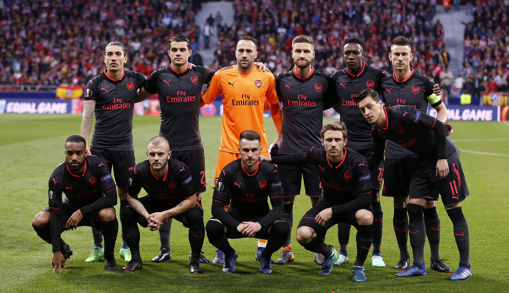
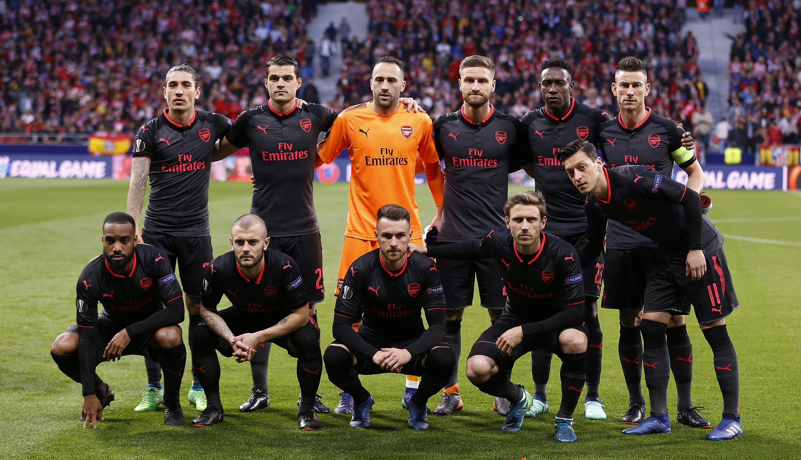

Un poco sobre el Arsenal...
El Arsenal Football Club es un club de fútbol profesional con sede en Holloway, Londres, Inglaterra, que juega en la máxima categoría del fútbol de ese país, la Premier League. En términos de trofeos ganados, es el tercer club más exitoso del fútbol inglés con 28 títulos nacionales. El Arsenal fue el primer club del sur de Inglaterra en unirse a la Football League en 1893, y desde entonces ha mantenido la racha más larga en la máxima división, y ha ganado el segundo mayor número de partidos de primera división en la historia del fútbol inglés. El lema del club es Victoria Concordia Crescit, latín para "La victoria crece a través de la armonía".

Bukayo Saka es un futbolista británico que juega como centrocampista o delantero en el Arsenal F. C. de la Premier League de Inglaterra.
Gabriel Teodoro Martinelli Silva es un futbolista brasileño que juega como delantero en el Arsenal F. C. de la Premier League de Inglaterra.

Gabriel Fernando de Jesus es un futbolista brasileño que juega como delantero en el Arsenal F. C. de la Premier League de Inglaterra.

Martin Ødegaard es un futbolista noruego que juega como centrocampista en el Arsenal F. C. de la Premier League de Inglaterra, y en la selección de fútbol de Noruega, equipos de los que es capitán.Hizo su debut profesional a los 15 años en el Strømsgodset I.
Declan Rice es un futbolista británico que también posee la nacionalidad irlandesa. Juega de centrocampista en el Arsenal F. C. de la Premier League de Inglaterra. Es internacional con la selección de Inglaterra